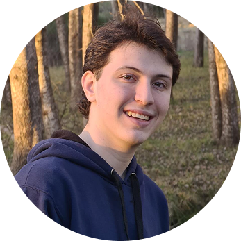

¡Hola soy Gabriel!
Desarrollo y diseño tecnología para mejorar
la calidad de vida de las personas
“La tecnología tiene sentido cuando mejora la vida de las personas.”
Desarrollo y diseño tecnología para mejorar
la calidad de vida de las personas
Egresado de Tecnologías de la Información y la Comunicación (TIC) en Escuela Técnica ORT.
(2021–2025)
Actual estudiante de Tecnología Digital en la Universidad Torcuato Di Tella (UTDT).
(2026–2029)
Planifico y coordino actividades recreativas y educativas para grupos.
Trabajo en equipo con otros educadores para fomentar la autonomía, el juego y la formación de valores.
Habilidades desarrolladas: Gestión de Proyectos, Comunicación efectiva y Resolución de conflictos